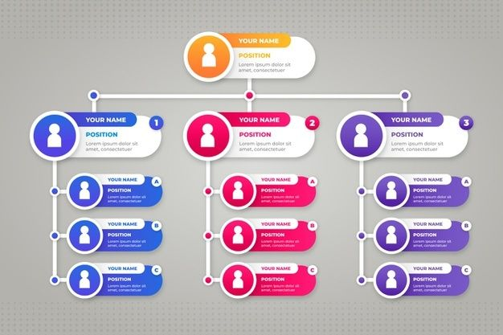

Tentang Kwartir Cabang Boyolali
Kwartir Cabang Boyolali, disingkat Kwarcab Boyolali, adalah salah satu elemen penting dalam struktur Gerakan Pramuka di Indonesia. Berkedudukan di Kabupaten Boyolali, Jawa Tengah, Kwarcab ini memiliki peran sentral dalam menyelenggarakan pendidikan kepramukaan di tingkat kabupaten.
Sebagai perpanjangan tangan dari Kwartir Daerah (Kwarda) Jawa Tengah dan Kwartir Nasional (Kwarnas), Kwarcab Boyolali bertanggung jawab atas pembinaan dan pengembangan potensi anggota Pramuka mulai dari tingkat gugus depan hingga ranting di seluruh wilayah Boyolali. Kami berkomitmen untuk membentuk generasi muda yang memiliki karakter kuat, berjiwa patriot, dan siap berkontribusi bagi masyarakat.
Sejarah Kwarcab Boyolali tidak dapat dipisahkan dari perkembangan Gerakan Pramuka secara nasional dan regional. Setelah pembentukan Kwarda Jawa Tengah pasca-Keputusan Presiden Nomor 238 Tahun 1961, Kwarcab Boyolali didirikan dan mulai aktif menjalankan tugasnya sebagai satuan organisasi di tingkat kabupaten. Sejak awal berdirinya, Kwarcab Boyolali telah berkomitmen penuh dalam mengimplementasikan nilai-nilai kepramukaan di tengah masyarakat Boyolali. Berbagai program dan kegiatan telah dilaksanakan, mulai dari pembinaan gugus depan di sekolah-sekolah, pengembangan kwartir ranting di setiap kecamatan, hingga penyelenggaraan perkemahan, lomba, dan bakti sosial. Peran Kwarcab Boyolali sangat krusial dalam mencetak generasi muda Boyolali yang berkarakter Pancasila, mandiri, peduli lingkungan, dan siap menjadi agen perubahan positif bagi pembangunan daerah.
Visi
Menjadikan Pramuka Boyolali sebagai wadah pembentukan karakter generasi muda yang mandiri, disiplin, dan berjiwa patriotik.
Misi
- Mengembangkan kegiatan kepramukaan yang edukatif dan inovatif.
- Meningkatkan peran serta masyarakat dalam pembinaan Pramuka.
- Meningkatkan kompetensi pembina dan peserta didik.
Struktur Organisasi Kwarcab Boyolali
Struktur keorganisasian Kwarcab Boyolali mencakup:
- Majelis Pembimbing Cabang (Mabicab): Unsur pemerintah dan tokoh masyarakat sebagai pembina.
- Pengurus Kwartir Cabang: Ketua, sekretaris, bendahara, dan bidang-bidang terkait.
- Dewan Kerja Cabang (DKC): Wadah kaderisasi Penegak dan Pandega.
- Pusdiklatcab: Penyelenggara pelatihan dan pendidikan pembina Pramuka.
- Andalan dan Staf: Tim pelaksana dan ahli pendukung kegiatan organisasi.
Lihat detail data pengurus di bagian Data Pengurus.
Data Pengurus Kwarcab Boyolali
| No. | Nama | Lulusan | Kwartir Ranting | Golongan Pelatih |
|---|
Data Anggota Pramuka Garuda Kwarcab Boyolali
| No. Reg | Nama | Pangkalan/Gudep/Sekolah | Tempat Tanggal Lahir | Kwartir Ranting | Golongan Anggota | Tahun |
|---|
Fungsi dan Tugas Utama Kwarcab Boyolali
Kwarcab Boyolali mengemban berbagai fungsi dan tugas penting, antara lain:
- Pembinaan dan Pengembangan: Membina dan mengembangkan Gerakan Pramuka di wilayah Kabupaten Boyolali.
- Koordinasi: Mengkoordinasikan kegiatan antar Kwarran dan gugus depan.
- Pelaksanaan Program: Menyusun dan menjalankan program sesuai kebijakan pusat.
- Penyediaan Sarana dan Prasarana: Menyediakan fasilitas penunjang kegiatan.
- Pemberian Penghargaan: Mengapresiasi anggota yang berprestasi.
- Penjalin Kemitraan: Bekerja sama dengan pemerintah dan lembaga lain.
Kontribusi Kwarcab Boyolali bagi Masyarakat
Kwarcab Boyolali juga aktif dalam kegiatan kemasyarakatan, seperti:
- Lingkungan Hidup: Penanaman pohon, edukasi kebersihan, dan program daur ulang untuk menjaga kelestarian alam Boyolali.
- Bakti Sosial: Distribusi bantuan kepada yang membutuhkan, donor darah, dan aksi kemanusiaan lainnya.
- Penanggulangan Bencana: Kesiapan dan partisipasi aktif dalam penanganan bencana alam, termasuk evakuasi dan penyaluran bantuan.
- Edukasi Masyarakat: Mengadakan kampanye tentang nilai-nilai kebangsaan, kedisiplinan, dan pentingnya pendidikan karakter bagi generasi muda.
Kami bangga menjadi bagian dari pembangunan karakter generasi muda Boyolali dan senantiasa berupaya memberikan kontribusi terbaik bagi kemajuan daerah.